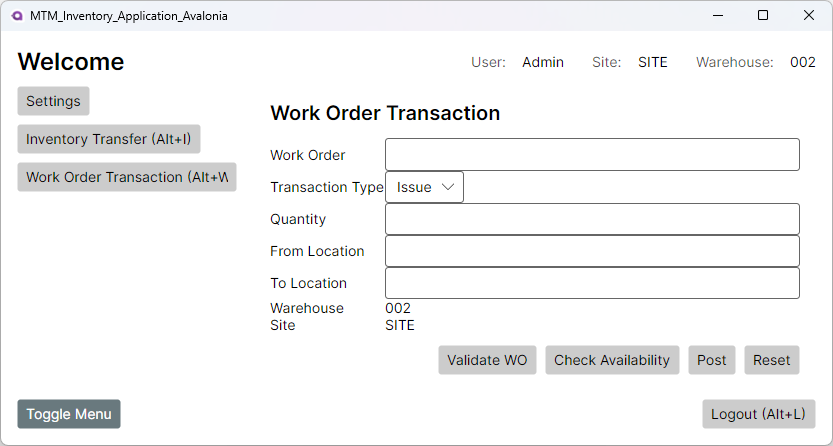

Work Order Transactions enable issuing materials to work orders and receiving completed items back to stock. This feature supports both Issue (consuming materials) and Receipt (returning finished goods) operations with comprehensive validation and error handling.

Work Order Transaction View - Handle issue and receipt operations
How to Use
Issue Transaction (Material to Work Order)
Access Work Order Transactions from MainView
Select Issue as the transaction type
Enter the Work Order ID
Click Validate Work Order to verify status and eligibility
Enter the Quantity to issue
Enter the From Location (where material currently resides)
Click Check Availability to verify sufficient stock
Review information and click Post Transaction
Receipt Transaction (Finished Goods to Stock)
Select Receipt as the transaction type
Enter the Work Order ID
Validate the work order is eligible for receipts
Enter the Quantity to receive
Enter the To Location (destination for finished goods)
Post the transaction to update inventory
Field and Control Descriptions
Field
Type
Description
Required
Work Order ID
Text Input
Work order number for the transaction
Yes
Transaction Type
Dropdown
Issue (0) or Receipt (1)
Yes
Quantity
Numeric Input
Amount to issue or receive (must be > 0)
Yes
From Location
Text Input
Source location for Issue transactions
Issue only
To Location
Text Input
Destination location for Receipt transactions
Receipt only
Warehouse ID
Read-Only Label
Current warehouse (typically "002")
-
Site ID
Read-Only Label
Current site identifier
-
Transaction Types
Issue Transactions
Purpose: Consume raw materials or components for work order production
Direction: From inventory location to work order
Validation: Requires sufficient available inventory at From Location
Impact: Reduces inventory quantity, charges work order
Receipt Transactions
Purpose: Receive finished goods from work order completion
Direction: From work order to inventory location
Validation: Checks for over-receipt conditions
Impact: Increases inventory quantity, credits work order
Validation and Error Handling
Work Order Validation
Status Check: Work order must be open and eligible for transactions
Closed Work Orders: Cannot issue to or receive from closed work orders
Remaining Quantity: Issues cannot exceed work order requirements
Receipt Limits: Receipts may be subject to over-receipt controls
Inventory Validation
Availability (Issue): Sufficient inventory must exist at From Location
Location Validity: All locations must exist and be active
Warehouse Consistency: Locations must belong to current warehouse
Common Error Scenarios
Closed Work Order: Attempting transactions on closed/completed work orders
Insufficient Inventory: Not enough available quantity for issue
Over Receipt: Receiving more than work order allows
Invalid Location: Location doesn't exist or is inactive
Negative Quantity: Quantity must be positive value
Command Descriptions
Command
Function
When to Use
Validate Work Order
Verifies work order exists and is eligible
After entering Work Order ID
Check Availability
Displays available inventory for Issue transactions
Before posting Issue transactions
Resolve Incomplete Part
Opens Part search dialog (placeholder)
When part information is needed
Post Transaction
Executes the Issue or Receipt operation
After all validation passes
Reset
Clears all fields
To start a new transaction
Business Rules and Constraints
Work Order Status Requirements
Open Status: Work orders must be in "Released" or "Open" status
Closed Restrictions: No transactions allowed on closed/complete work orders
Future Status: May support work orders in "Future" status with appropriate controls
TRACE Requirements
Lot-controlled items require lot number capture during transactions
Serial-controlled items require individual serial number tracking
TRACE data must be maintained throughout the transaction process
Posting and Audit Trail
All transactions create entries in VISUAL InventoryTransaction table
Local audit entries record transaction details for reporting
Exception conditions are logged to app database for analysis
Keyboard and Scanner Support
Barcode Scanner Integration
Work Order ID field supports barcode input
Location fields accept scanned location barcodes
Scanner input automatically advances focus
Keyboard Navigation
Tab: Move between fields
Enter: Activate focused button
Esc: Cancel operations or clear fields
Dialog Integration
Exception Handling
Closed work order errors display specific messages and suggested actions
Insufficient inventory errors show available quantities
Over-receipt warnings provide options to proceed or cancel
Part Dialog Integration
Resolve Incomplete Part button opens part search dialog
Currently seeds search with Work Order ID (placeholder implementation)
Future enhancement will provide part-specific search capabilities